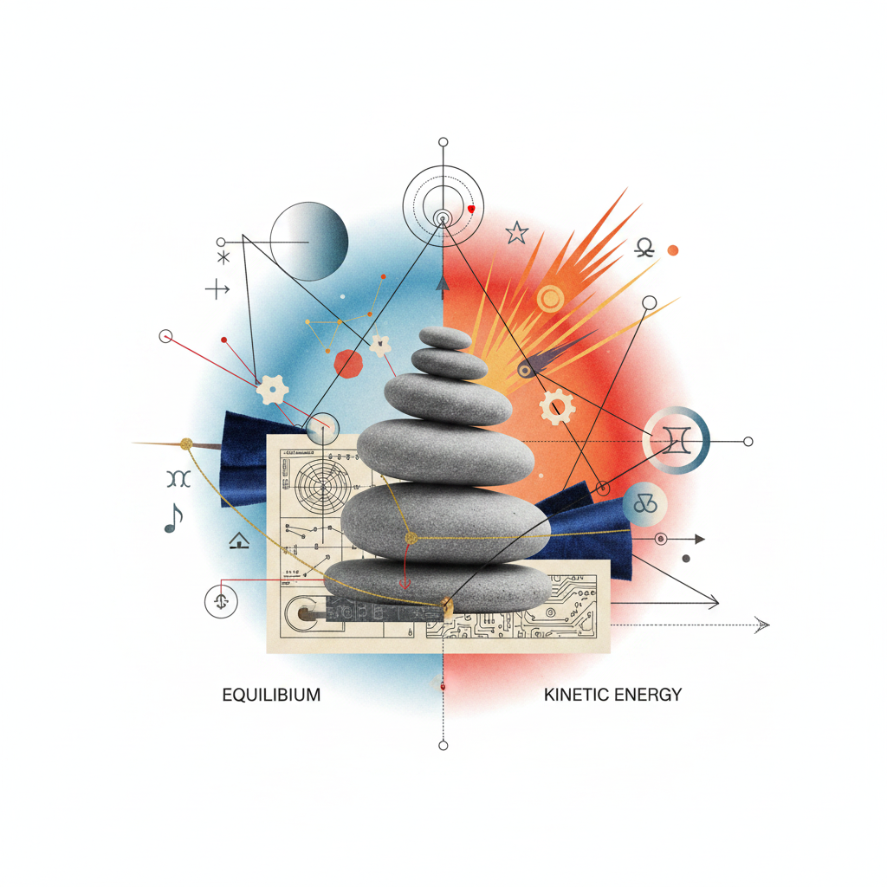

Balance Igniting
to Fire

Librarian's Note: Proceed with focused intent.
Libra NM → Aries FM
Kidneys → Head
Diplomat to Pioneer
ACTIVE
The 14-Day Protocol
Sequence: 017-AlphaThe Diplomatic Groundwork
Focus on kidney filtration and systemic balance. Engage in collaborative mediation. Audit your social contracts and release those that no longer serve the central fire.
Renal Resonance
The Neural Spark
Analyze the transition from Parasympathetic equilibrium to Sympathetic initiation within the Aries cognitive matrix.
Courageous Initiation
Direct action at the Full Moon. The energy rises from the kidneys to the head. Mental clarity, bold decisions, and the "First Spark" of a new creative cycle.
Somatic Check-in
Clinical Humanities Inquiry
Contrast the Libraian 'Mirroring' mechanism with the Aries 'Singularity' in the context of neuro-plastic development.
How does the suppression of the kidney-meridian affect the pre-frontal cortex's capacity for strategic initiation?